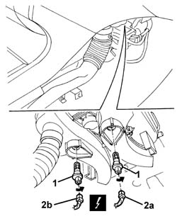

5010D28 upper mixed air temperature sensor (1), lh or rh r r following electrical circuit check
- Path
- Procedures > 50 AUXILIARY UNITS > 5010 CLIMATE CONTROL - MISCELLANEOUS > 5010D air temperature recording system > 5010D28 upper mixed air temperature sensor (1), lh or rh r r following electrical circuit check
- Kind
- repair procedure (removal / refitting; the operation number is the code)
- Applies to
- all engines; all production periods
- Interactive page
- https://sloeber94.github.io/elrnDB-a156/en/#/3238269
Applies to: all engines; production: da 03/02 a 09/03, da 10/03
 Removing
Removing
 Refitting
Refitting7040A65 passenger compartment box lock , one , r r
1. Rotate the sensor in an anti-clockwise direction and extract it.
2. Disconnect the electrical connection for the sensor (2a, 2b).
 | Name | Connector |
|---|---|---|
2a | Lower treated air sensor |
| Name | Connector |
|---|---|---|
2b | Lower treated air sensor |

Applies to: all engines; production: da 03/02 a 09/03, da 10/03
Refitting
RemovingCheck that the sensor is not damaged.
Connect the sensor electrical connection.
Place the sensor in its housing and rotate it until it is in the end of travel position.
7040A65 passenger compartment box lock , one , r r
Check the operation of the system using the Examiner or the other diagnostic equipment.